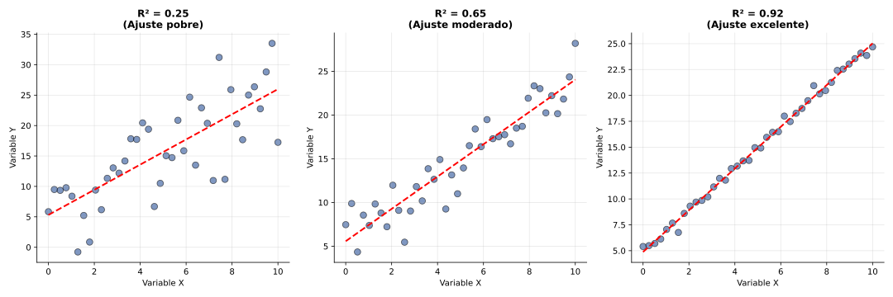

Sesión 6: Coeficiente de Determinación (R²)
🎯 Objetivos
- Comprender R² como medida de bondad del ajuste
- Calcular e interpretar R² como porcentaje de varianza explicada
- Valorar gráfica y numéricamente la pertinencia del ajuste lineal
- Decidir cuándo usar la recta de regresión para predicciones
📚 Teoría
Coeficiente de Determinación (R²): Proporción de la variabilidad de Y que es explicada por el modelo de regresión lineal.
Relación con r: \[ R^2 = r^2 \]
Rango: \(0 \leq R^2 \leq 1\)
Interpretación:
- R² = 0.81: El 81% de la variabilidad de Y es explicada por X
- R² = 0.25: Solo el 25% de la variación se explica → ajuste pobre
- R² = 0.95: 95% explicado → ajuste excelente
Criterios:
| R² | Calidad del Ajuste | Uso de Predicciones |
|---|
| > 0.90 | Excelente | Muy fiables |
| 0.70 - 0.90 | Bueno | Fiables |
| 0.50 - 0.70 | Moderado | Aceptables con cautela |
| < 0.50 | Pobre | No recomendable |

Ejercicios
Ej 1: Si r = 0.9, calcula R² e interpreta.
Ver solución
\(R^2 = r^2 = (0.9)^2 = 0.81\)
Interpretación: El modelo lineal explica el 81% de la variabilidad de la variable dependiente. Es un ajuste muy bueno.
Ej 2: Comparar dos modelos: Modelo A con R²=0.45 vs Modelo B con R²=0.92. ¿Cuál usar para predicciones?
Ver solución
Modelo B (R²=0.92) es claramente superior:
- Explica 92% vs 45% de variabilidad
- Las predicciones serán mucho más precisas
- Los residuos (errores) serán menores
Solo usaríamos Modelo A si no hay alternativa mejor disponible, pero con precaución.
Ej 3 (Contexto Vigo): Analizar relación barcos activos vs toneladas capturadas en Puerto de Vigo (datos: barcos_capturas_vigo.csv). Se obtiene r = 0.924.
Ver análisis
\(R^2 = (0.924)^2 = 0.854\)
Interpretación:
- El 85.4% de la variación en capturas se explica por el número de barcos activos
- Es un ajuste bueno-excelente
- Las predicciones de capturas basadas en número de barcos serán bastante fiables
- Contexto: Tiene sentido económico: más barcos → más capturas totales
El 14.6% restante se debe a otros factores: condiciones meteorológicas, estacionalidad de especies, regulaciones pesqueras, etc.
💡 Regla práctica: En ciencias sociales, R² > 0.60 ya es considerado bueno, porque las variables humanas tienen múltiples causas.